Wave Soldering Pallets
For flux and contamination on compatible pallet assemblies.
Automated Fixture & Pallet Cleaning
A heavy-duty batch cleaning system combining heated water-based spray cleaning, clear-water rinsing and hot-air drying in one automatic cycle.
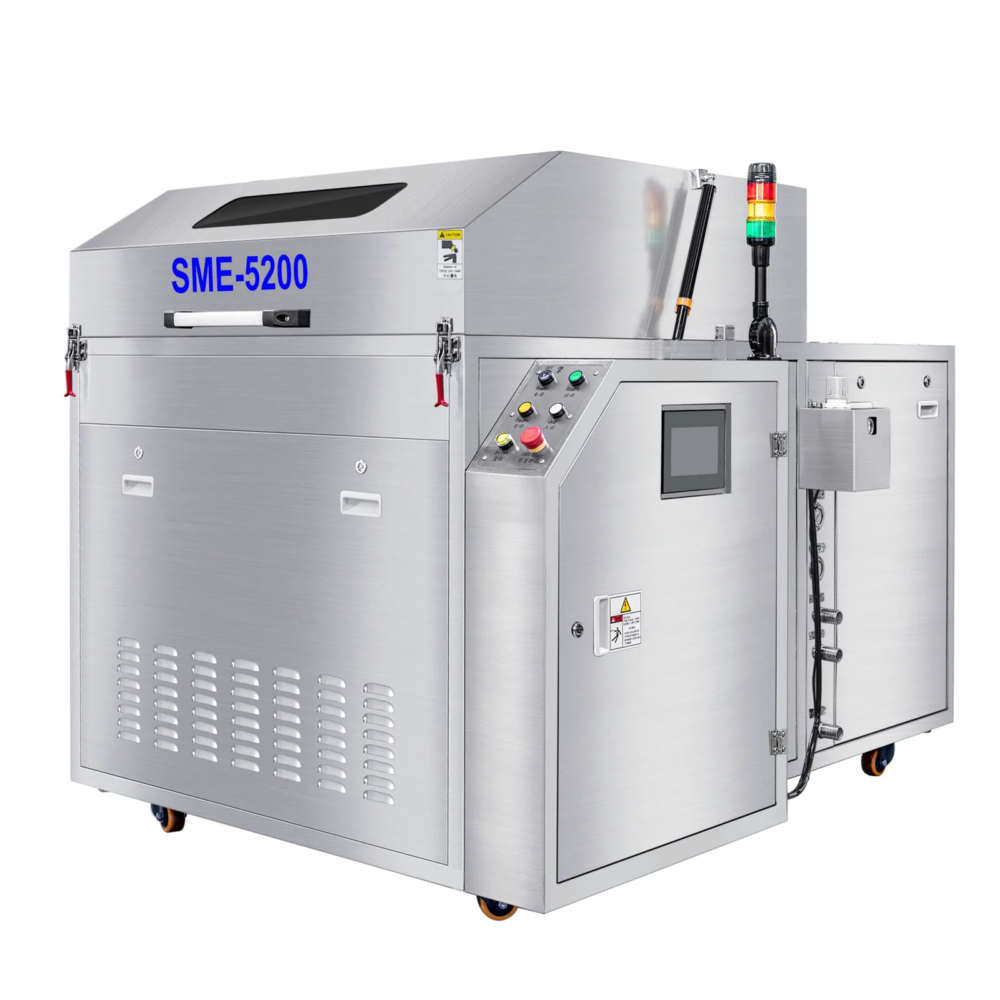
Maintenance Reality
Wave soldering pallets, oven parts, coolers, filters and production fixtures can collect process residue over repeated use. SME-5200 is designed to bring a controlled, repeatable cleaning sequence into planned maintenance.
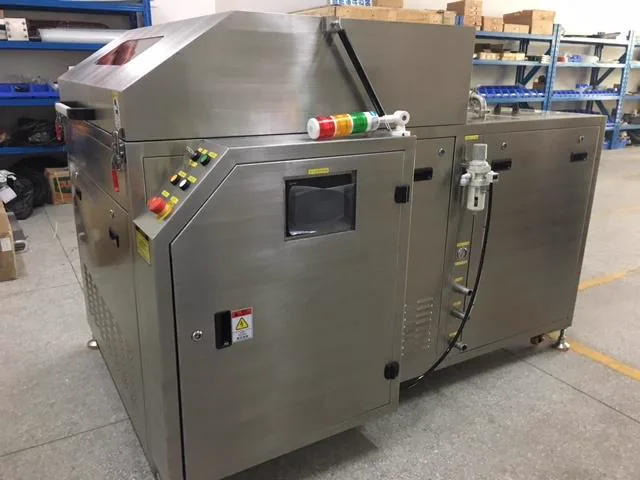
Application Range
Use the actual part, material, contamination and chemistry requirements to confirm suitability before production use.
For flux and contamination on compatible pallet assemblies.
For coolers, heat exchangers and compatible maintenance parts.
For washable production fixtures and auxiliary tooling.
For water-spray-cleanable oven maintenance parts.
Material compatibility matters. Final suitability depends on material compatibility, contamination and cleaning chemistry. Stencil cleaning is an additional application subject to fixture and process confirmation; SME-5200 is primarily presented as a fixture, pallet and production-parts cleaning system.
Cleaning Chemistry
The user manual specifies water-based cleaning liquid for this machine. Cleaning chemistry should be selected according to the contamination, fixture material and the chemical supplier's technical guidance.
One Automatic Cycle
The documented sequence combines batch loading, recipe settings, heated water-based spray cleaning, water rinsing and hot-air drying.
Place compatible fixtures or pallets into the rotating basket or a designed holder.
Select the required cleaning recipe through the HMI.
Heated water-based liquid is pumped through filtration and spray nozzles.
The separate rinse circuit removes remaining liquid and loosened contamination.
High-volume air and air knives provide the documented drying stage.
After the automatic cycle, remove parts and inspect them for the agreed process result.
The 2021 product catalog lists 3–20 min cleaning, 1–2 min rinse and 10–20 min drying. Actual process time is adjustable and should be validated with the application.
Spray Coverage
The standard basket is listed as Ø1000 × H200 mm. Source material describes basket rotation during cleaning, rinsing and drying, with upper, lower and front spray directions and 720° coverage.
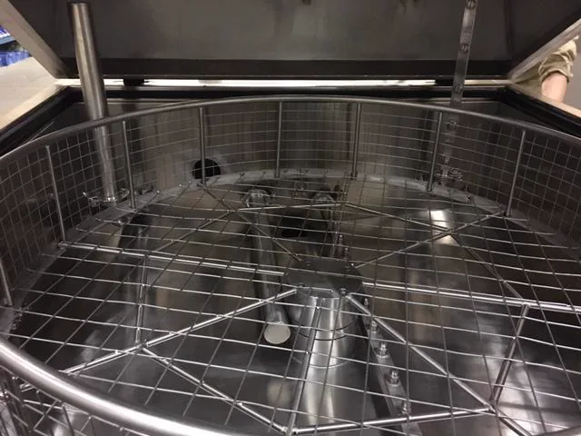
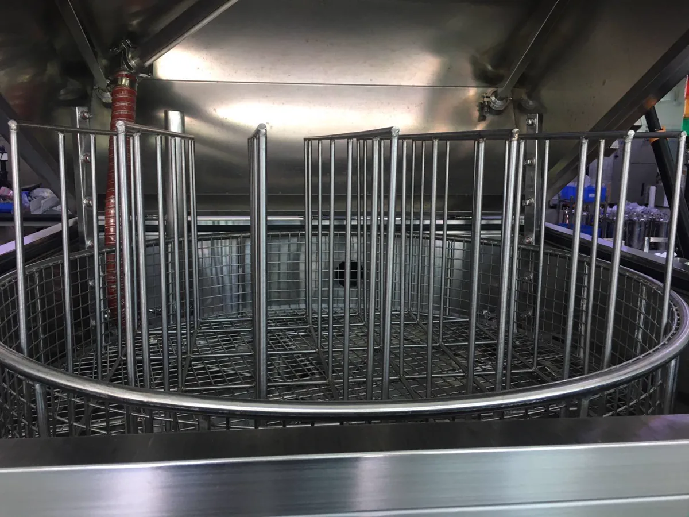
Customized Loading
The standard rotating basket can be adapted with custom holders according to the actual pallet or fixture geometry, size and batch arrangement.
Filtration System
The 2021 catalog describes three filtration stages in the cleaning circuit and reusable stainless-steel filtration in the rinse circuit.
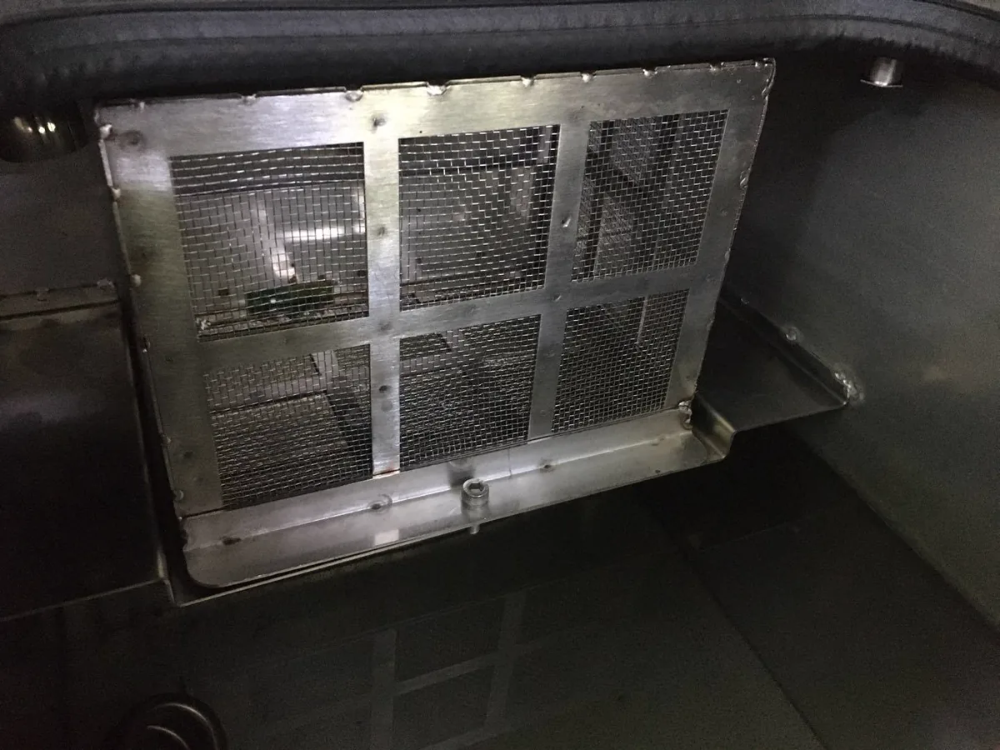
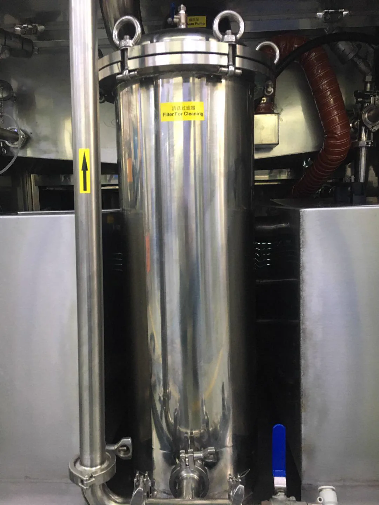
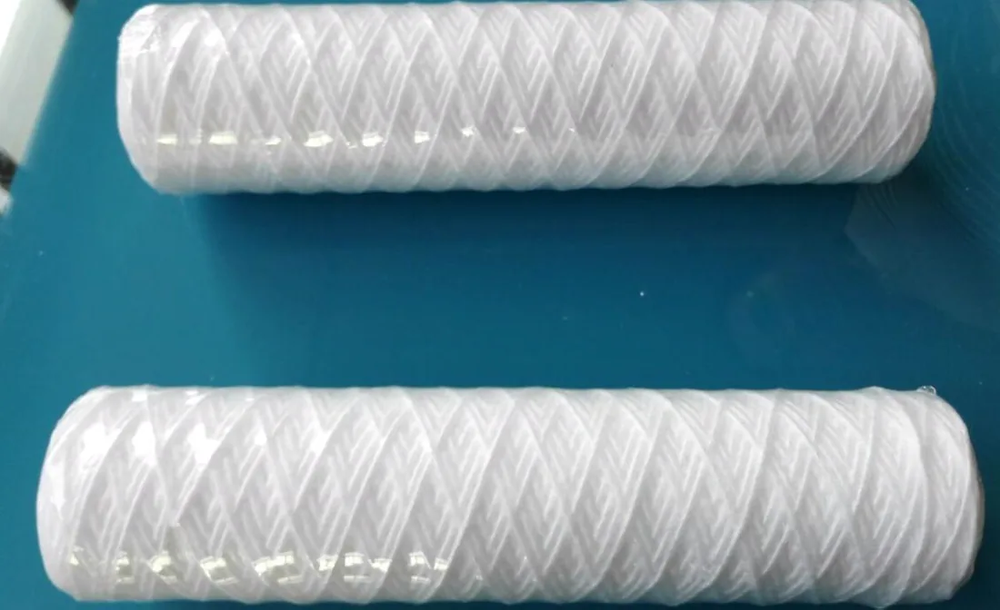
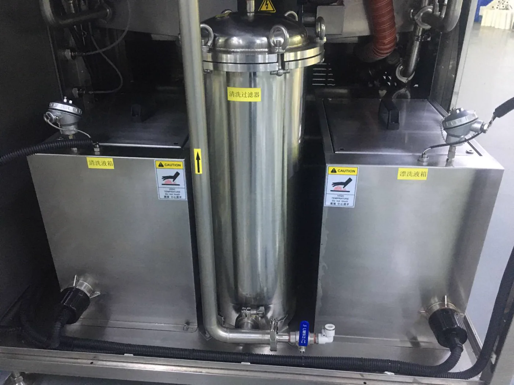
Machine Interior
Select a marker on the supplied interior image to inspect the documented system areas.
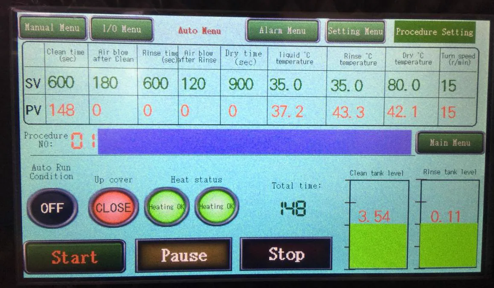
Control System
The manual describes PLC and touch-panel control with editable procedures, automatic and manual modes, alarm information, temperature settings, pressure monitoring and liquid-level status.
Process Protection
The following protections are supported by the supplied user manual and should be operated in accordance with the current manual and site safety procedures.
The manual states that opening the door or window interrupts operation.
Level switches protect operation if liquid or water reaches abnormal limits.
Over-temperature protection is listed for the heaters.
Overload protection is listed for pumps, motors and associated operation.
The operating panel includes an emergency-stop function for abnormal situations.
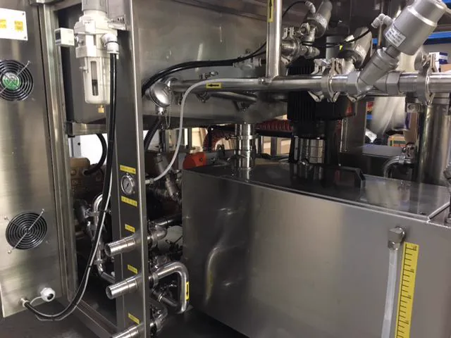
Industrial Construction
The product material identifies a total SUS304 machine, including stainless-steel construction in the cleaning system and pipework.
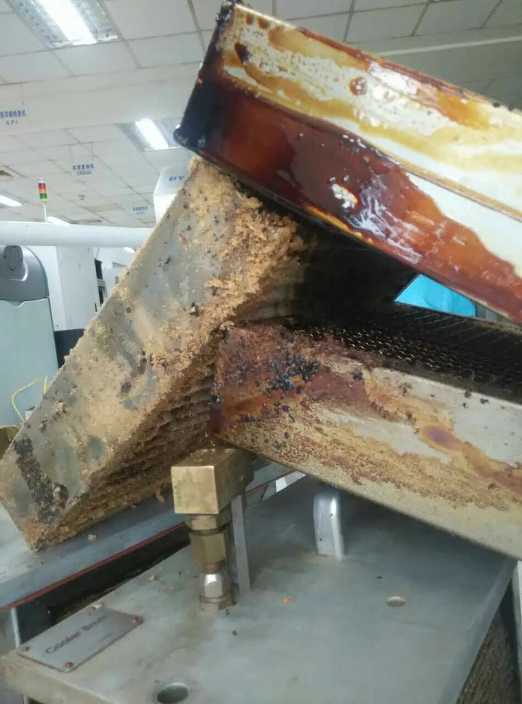
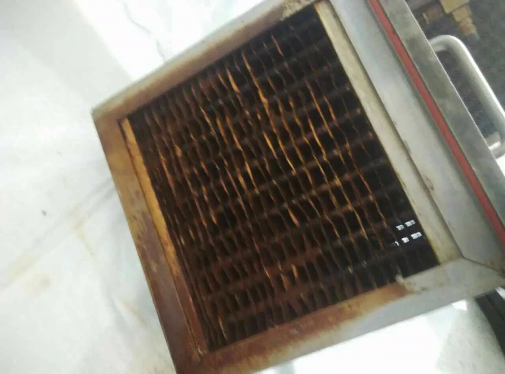
Real Cleaning Examples
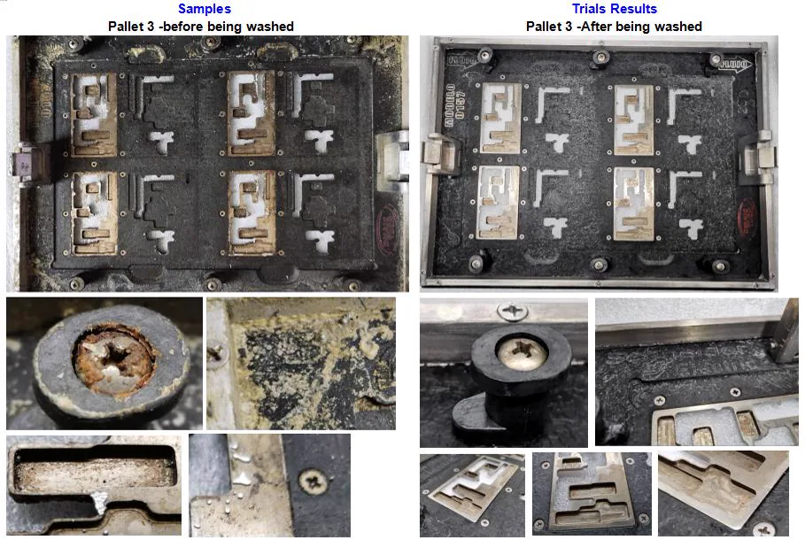
Technical Specifications
The table uses the 2021 product catalog as the priority source. Final specifications should be confirmed according to the current machine configuration.
Configuration notice. The 2020 manual and the 2021 catalog contain different values for several fields. The page follows the 2021 catalog by priority; confirm dimensions, installed power, compressed-air flow, temperature range and program timing against the current order drawing.
Site Preparation
These are the practical site items supported by the user manual. Request the current installation drawing before final layout or utility connection.
Install on a flat, stable floor.
Match the current machine's electrical requirement and ground it correctly.
Confirm supply and flow against the final configuration.
Provide the agreed water / drain connection and ventilation treatment.
Source-Material Gallery
All gallery images are extracted from the supplied SME-5200 PDF materials. Select an image to inspect it.
FAQ
Send a representative part for review when the application, material compatibility or holder design needs confirmation.
It is primarily presented for compatible wave soldering pallets, reflow oven parts, SMT/THT fixtures, coolers, heat exchangers, chains, claws, filters and other washable production parts.
Yes. The 2020 user manual positions SME-5200 for cleaning flux residue and solder balls from wave-soldering pallets, subject to the actual pallet construction and process evaluation.
The supplied product materials show reflow oven cooler and heat-exchanger cleaning examples. Confirm material compatibility, geometry and cleaning chemistry for the actual part.
Stencil cleaning is an additional application subject to stencil size, construction and the required process confirmation. SME-5200 is primarily positioned here as a fixture, pallet and production-parts cleaning system.
No. The user manual specifies compatible water-based cleaning liquid and states that volatile organic cleaning solvents must not be used.
The 2021 catalog lists a standard Ø1000 mm × H200 mm cleaning basket.
Yes. The source materials show a customized pallet holder. Southern Machinery can evaluate the part dimensions, weight, geometry, quantity and cleaning requirement.
The supplied materials describe basket rotation during cleaning, rinsing and drying, with multi-direction spray coverage.
Yes. The documented automatic cycle includes water-based spray cleaning, clear-water rinsing and hot-air drying.
The source material describes recirculated cleaning and rinse circuits with separated tanks and piping, plus multi-stage cleaning filtration. Final liquid-management practice must follow the selected chemistry and local requirements.
Sample Evaluation
Send photos, dimensions and contamination information. Southern Machinery can evaluate basket compatibility, loading method, cleaning-chemistry requirements, cleaning cycle, customized holder and indicative batch capacity.